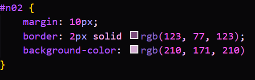

Selector Universal
Código css:
En este selector universal se selecciono el id n01 de la seccion de actividad recreativa para así cambiar el color de todas las letras a un color morado.

Resultado:

En este selector universal se selecciono el id n01 de la seccion de actividad recreativa para así cambiar el color de todas las letras a un color morado.
En este selector de tipo se selecciono el id n01 nuevamente pero ahora utilizando el header como tipo para así cambiarle el fondo a un color morado.

En este selector por ID se selecciono solamente el id n02 de un h3 para así cambiarle el fondo de color morado, ponerle margen y borde de morado.

En este selector por clase se selecciono la clase .letra de unos td de la tabla (Bailar, Escuchar música y Ver series) para así cambiarles el color a un fondo morado, la letra y el tamaño de la letra.

Este selector agarra el id n03 y el atributo href para que los enlaces cambien de color de letra y también su color de fondo.

Este selector selecciona section y img para que a la sección y las imagenes se les agregue un borde doble morado y también un color de fondo lila.

Este selector selecciona li que están dentro del elemento con id n04 para que tengan un color de fondo lila, el texto morado y un margen de 15 px.

Este selector selecciona los párrafos (p) que son hijos directos de address para que tengan el texto morado, un fondo color plum y un ancho de 200 px.


Este selector selecciona los párrafos (p) que están justo después de un h3 dentro de article con id “n05” para que tengan un borde de 2 px sólido color rosa, fondo lila, texto morado y un margen de 10 px.

Este selector selecciona todos los párrafos (p) que estén después de un h3 dentro de article con id “n06” para que tengan fondo lila y texto morado.